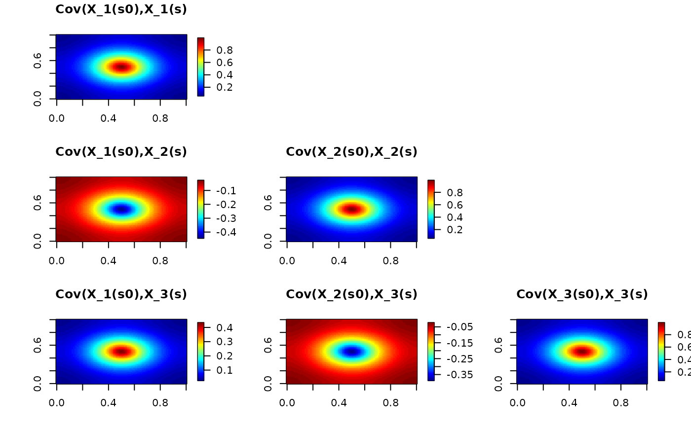

R/models.R
precision_matrix_multivariate_spde.RdCompute the precision matrix for multivariate spde Matern model
precision_matrix_multivariate_spde(
p,
mesh,
rho,
alpha_list = NULL,
theta_K_list = NULL,
variance_list = NULL,
B_K_list = NULL,
theta = NULL,
Q = NULL
)dimension, should be integer and greater than 1
an fmesher::fm_mesh_2d object, mesh for build the SPDE model
vector with the p(p-1)/2 correlation parameters rho_11, rho_21, rho_22, ... rho_p1, rho_p2, ... rho_p(p-1)
a list of SPDE smoothness parameter
a list (length is p) of theta_K
If provided, it should be a vector of length p, where the kth element corresponds to a desired variance of the kth field. The kth operator is then scaled by a constant c so that this variance is achieved in the stationary case (default no scaling)
a list (length is p) of B_K (non-stationary case)
parameter for Q matrix (length of 1 when p=2, length of 3 when p=3)
orthogonal matrix of dim p*p (provide when p > 3)
the precision matrix of the multivariate model
The general model is defined as $D diag(L_1, ..., L_p) x = M$. D is the dependence matrix, it is paramterized by $D = Q(theta) * D_l(cor_mat)$, where $Q$ is the orthogonal matrix, and $D_l$ is matrix controls the cross-correlation. See the section 2.2 of Bolin and Wallin (2020) for exact parameterization of Dependence matrix.
Bolin, D. and Wallin, J. (2020), Multivariate type G Matérn stochastic partial differential equation random fields. J. R. Stat. Soc. B, 82: 215-239. https://doi.org/10.1111/rssb.12351
library(fmesher)
library(fields)
#> Loading required package: spam
#> Spam version 2.10-0 (2023-10-23) is loaded.
#> Type 'help( Spam)' or 'demo( spam)' for a short introduction
#> and overview of this package.
#> Help for individual functions is also obtained by adding the
#> suffix '.spam' to the function name, e.g. 'help( chol.spam)'.
#>
#> Attaching package: ‘spam’
#> The following objects are masked from ‘package:base’:
#>
#> backsolve, forwardsolve
#> Loading required package: viridisLite
#>
#> Try help(fields) to get started.
# Define mesh
x <- seq(from=0,to=1,length.out = 40)
mesh <- fm_rcdt_2d_inla(lattice = fm_lattice_2d(x,x), extend = FALSE)
# Set parameters
p <- 3 #number of fields
rho <- c(-0.5, 0.5,-0.25) #correlation parameters
log_kappa <- list(2,2,2) #log(kappa)
variances <- list(1,1,1) #set marginal variances to 1
alpha <- list(2,2,2) #smoothness parameters
# Compute precision
Q <- precision_matrix_multivariate_spde(p, mesh = mesh, rho = rho,
alpha = alpha, theta_K_list = log_kappa,
variance_list = variances)
# Plot the cross covariances
A <- as.vector(fm_basis(mesh,loc = matrix(c(0.5,0.5),1,2)))
Sigma <- as.vector(solve(Q,c(A,rep(0,2*mesh$n))))
r11 <- Sigma[1:mesh$n]
r12 <- Sigma[(mesh$n+1):(2*mesh$n)]
r13 <- Sigma[(2*mesh$n+1):(3*mesh$n)]
Sigma <- as.vector(solve(Q,c(rep(0,mesh$n),A,rep(0,mesh$n))))
r22 <- Sigma[(mesh$n+1):(2*mesh$n)]
r23 <- Sigma[(2*mesh$n+1):(3*mesh$n)]
Sigma <- as.vector(solve(Q,v <- c(rep(0,2*mesh$n),A)))
r33 <- Sigma[(2*mesh$n+1):(3*mesh$n)]
proj <- fm_evaluator(mesh)
par(mfrow=c(3,3))
image.plot(fm_evaluate(proj,r11), main = "Cov(X_1(s0),X_1(s)")
plot.new()
plot.new()
image.plot(fm_evaluate(proj,r12), main = "Cov(X_1(s0),X_2(s)")
image.plot(fm_evaluate(proj,r22), main = "Cov(X_2(s0),X_2(s)")
plot.new()
image.plot(fm_evaluate(proj,r13), main = "Cov(X_1(s0),X_3(s)")
image.plot(fm_evaluate(proj,r23), main = "Cov(X_2(s0),X_3(s)")
image.plot(fm_evaluate(proj,r33), main = "Cov(X_3(s0),X_3(s)")
